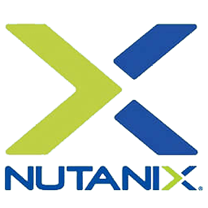
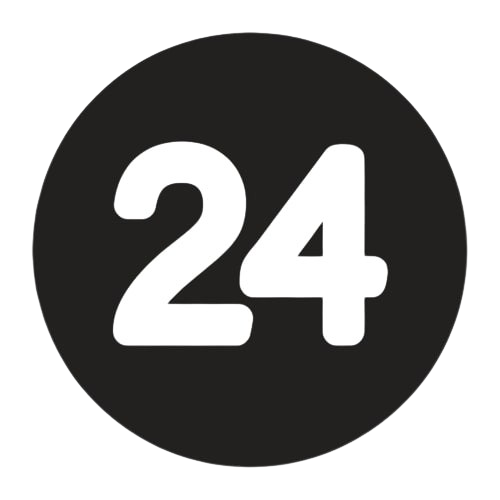

Warrick Leon Liyang He
Hello! I am Warrick He, a junior at UCLA earning his Bachelor's degree in Computer Science.
I am interested in Software Engineering, Databases, Operating Systems, and Systems Engineering.
In my free time, I like to play badminton, basketball, or read!
Work Experience
Workday — Software Engineer Intern
Optimizing custom Apache Spark engine’s data processing to support the Prism analytics product
Collect and verify performance metrics in a dashboard to identify possible areas for improvement

Nutanix — Software Engineer Intern
Constructed a Grafana Prometheus dashboard in Python to perform analysis on NVIDIA GPU performance
Reduced weeks long debugging efforts into hours by providing key task related metrics of over 40 processes
Aggregated and used data to detect system regression, visualizing it using Grafana and Elastic Search
Writing Python tools to analyze the performance of distributed systems under the stress of 3000 virtual machines
Umbo Computer Vision — Software Engineer Intern
Wrote a Python script that can generate videos of people walking or standing at any distance on any background
Identified the causes of the computer vision model’s failed test cases and provided crucial feedback to teams
Automated product testing by using Linux and Python scripts to generate over 60 hours of fake traffic
Research Experience
UCLA VAST Labratory
Employ Vitis HLS and OpenCL to create a CPU & FPGA implementation of streaming applications
Pinpoint potential end-to-end performance bottlenecks and collect end-to-end performance measurements
Perform FPGA compute optimization for run length encoding and AES-256 encryption
UCLA Computational Machine Learning Group
Researched factors that may cause memorization in generative models and any possible remedies
Constructed a library to compute memorization metrics such as k-NN, random forest, and k-fold approximation
Worked with 7 other research assistants to test hypotheses on language model memorization

UC Irvine Embedded & Cyber-Physical Systems
Designed a low power consumption LSTM model, reaching over 90% accuracy in predicting electric motor failures
Explored different neural network architectures and used Gaussian noise to create more training data
Processed and visualized time series data through a combination of MATLAB, NumPy, Pandas, and Matplotlib
Co-authored an award winning paper.
Paper Overview.
Projects
BioQuest by YAEW — LA Hacks
BioQuest helps people identify species of animals and plants as they explore the world around them
Honorable mention at LA's largest hackathon with over 1000 attendees
Wrote a Python Flask backend that would help people identify animal species
Used the Google Gemini API to create educational quizzes and descriptions of species
Fine-tuned and connected a machine learning model hosted on Intel DeveloperCloud to the backend
Github DevPost
OurFridge — A2C Hackathon
OurFridge helps groups of people use up their ingredients by tracking expiration dates & suggesting recipes
Won 3rd place at the A2C hackathon consisting of close to 100 other UCLA students
Used Firebase and a Flask backend to provide real time fridge data to members of a fridge
Add email integration to notify users when requesting for other members fridge ingredients
Github
CafeHopper — HOTH XI Hackathon
CafeHopper helps people find an ideal cafe hopping path given user cafe preferences and location
Awarded ”Best Web” at a campus wide hackathon for our creative application
Spearheaded the development of Flask backend utilizing the Yelp API to fetch real-time cafe data
Orchestrated seamless integration of React.js frontend with backend, ensuring smooth user experience
Github DevPost
Hagglehaul by CABbage
Hagglehaul is a web app built to democratize ridesharing and schedule rides in advance within an era of surge pricing and ride deserts
Used C# to write a highly functional backend that allowed riders to set rides and drivers to do bidding
Wrote unit tests in C# for all aspects of backend, ensuring that there would be no incorrect behavior
Github Website Link (may be taken down)

24 Android App
Developed a math game in which players form the number 24 using four numbers and arithmetic operations
Implemented all aspects of the application using Java for backend functionality and XML for frontend design
Conceptualized, designed, and executed the entire project independently using Android Studio
Github
FRC Robotics 3473
Used MongoDB and Express.js to construct a backend for secure and efficient user interactions with the database
Used Amazon Web Services to create CI/CD pipeline for a 80% cut in deployment time
Wrote the robot’s computer vision component, allowing it to auto lock onto a target and score with 90% accuracy
Github